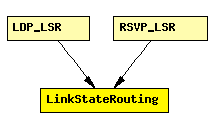

File: Network/TED/LinkStateRouting.ned
C++ definition: click here
This module implements a very minimalistic link state routing protcol. Apart from the basic topology information, the current link usage is distributed to all participants in the network (by means of flooding).
Collaborations
The link state database is kept in the TED module.
The following diagram shows usage relationships between modules, networks and channels. Unresolved module (and channel) types are missing from the diagram. Click here to see the full picture.
If a module type shows up more than once, that means it has been defined in more than one NED file.
| LDP_LSR | An LDP-capable router. |
| RSVP_LSR | An RSVP-TE capable router. |
| Name | Type | Description |
|---|---|---|
| peers | string |
| Name | Direction | Description |
|---|---|---|
| from_ip | input | |
| to_ip | output |
simple LinkStateRouting parameters: peers : string; gates: in: from_ip; out: to_ip; endsimple